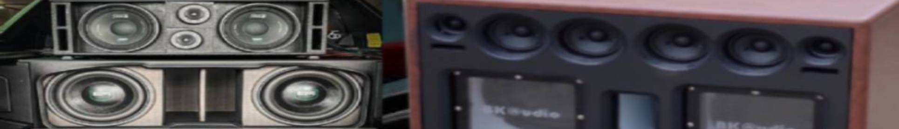

ตู้ลำโพงกลางแจ้ง
1.ตู้ลำโพงชนิดพ้อยซอร์ส (Point source speaker)
เป็นตู้ลำโพงที่มีมุมกระจายเสียงที่กว้าง สามารถกระจายเสียงให้ครอบคลุมพื้นที่ได้มากโดยใช้ลำโพงแค่ 1 ใบ ให้ความดังที่สูง ตอบสนองความถี่ได้กว้าง เหมาะกับห้องที่มีขนาดเล็กไปจนถึงของขนาดกลาง สามารถเคลื่อนย้ายได้สะดวก ติดตั้งง่าย แต่ด้วยความที่ตู้ลำโพงพ้อยซอร์สมีข้อจำกัดในเรื่องของความดังที่ลดลง -6dB ตามระยะทางที่เพิ่มขึ้นทุก ๆ 1 เท่า ความดังของเสียงจึงลดลงไปอย่างมาก ทำให้ต้องใช้จำนวนลำโพงที่เพิ่มมากขึ้น ด้วยจำนวนลำโพงที่เพิ่มมากขึ้นนี้เอง ทำให้มีผลในเรื่องของการหักล้างของเฟสเกิดขึ้น (Phase Cancelation) เมื่อเกิดการหักล้างกันของเฟส ทำให้เสียงได้ยินบางย่านความถี่นั้นเบาลง แต่ละพื้นที่นั่งฟังก็จะได้ยินเสียงไม่เหมือนกัน
2.ตู้ลำโพงไลน์อาเรย์ (Line Array Speaker)
ป็นตู้ลำโพงที่ถูกออกแบบมาตามหลักทฤษฎี Line Source(ไลน์ซอร์ส) เหมาะกับพื้นที่ขนาดกลางถึงขนาดใหญ่อย่างสนามกีฬา ลานกว้างๆ เป็นตู้ลำโพงที่มีมุมกระจายเสียงแนวตั้งที่แคบมาก ๆ ไม่เกิน 10องศา ทำให้ตู้ลำโพงไลน์อาเรย์ไม่สามารถใช้งานใบเดียวได้ เพราะจะทำให้ไม่สามารถครอบคลุมพื้นที่ในด้านลึกได้ จึงจำเป็นต้องใช้ลำโพงหลายๆใบมาประกอบกันเพื่อให้เสียงสามารถกระจายได้ครอบคลุมพื้นที่ อีกทั้งการนำลำโพงหลายๆใบมาต่อกันนั้น สิ่งที่จะได้ก็คือความดังที่เพิ่มขึ้น และการควบคุมการกระจายเสียงของย่านเสียงต่ำทำได้ดีขึ้น ไม่ทำให้เสียงต่ำนั้นกระจัดกระจายไปสะท้อนกับผนังห้อง แล้วย้อนกลับมาแทรกสอดกับเสียงลำโพงจริง ๆ จนเกิดการหักล้างกันของเฟสเกิดขึ้น ลำโพงไลน์อาเรย์นั้นให้ความดังที่สูงมาก ๆ แต่ก็แลกมาด้วยราคาที่สูงมากเช่นกัน
3.ตู้ลำโพงคอลัมน์ (Column Speaker)
เป็นตู้ลำโพงที่ถูกออกแบบมาตามหลักทฤษฎีเหมือนกับตู้ลำโพงไลน์อาเรย์ แต่การใช้งานให้ง่ายเหมือนตู้ลำโพงพ้อยซอร์ส ตู้ลำโพงแบบคอลัมน์นั้นในปัจจุบันนั้นให้ความดังที่สูงและมีมุมกระจายเสียงที่กว้าง ควบคุมการกระจายเสียงของย่านความถี่ต่ำได้ดี แต่ก็มีเรื่องของความดังที่ลดลง -6dB ตามระยะทางที่เพิ่มขึ้น 1 เท่าเหมือนตู้ลำโพงพ้อยซอร์ส จึงเหมาะกับห้องขนาดเล็กไปจนถึงขนาดกลางที่มีเพดานไม่สูงมาก และมีความก้องสูง จะให้ความชัดเจนของเสียงที่ดีกว่าตู้ลำโพงพ้อยซอร์สทั่วไป
อ้างอิง : https://siamsoundstore.com/how-to-chose-pa-speaker/